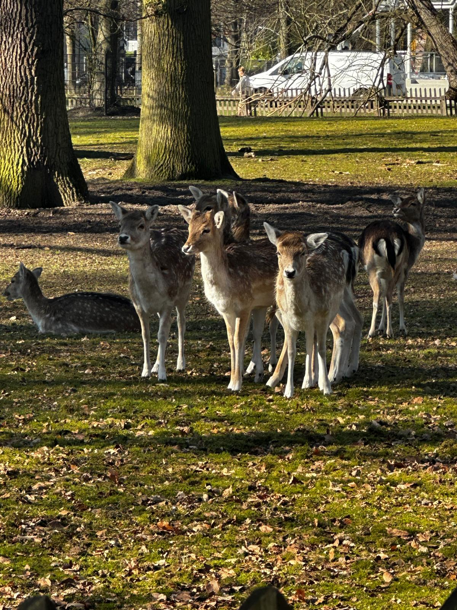
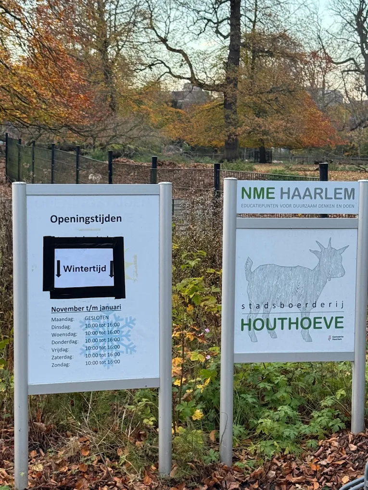

Voor wie is deze route?
De route is vooral leuk voor mensen die dieren interessant vinden. Daardoor verschilt deze wandeling van een gewone wandeling door een park.
Deze wandelroute is bedoeld voor dierenliefhebbers die tijdens hun wandeling graag herten willen bekijken. Zo combineer je een wandeling in een groene omgeving met iets extra’s om onderweg te zien.
De route is vooral leuk voor mensen die dieren interessant vinden. Daardoor verschilt deze wandeling van een gewone wandeling door een park.

Als je langs het Hertenkamp loopt, kun je herten gaan spotten. Dit hoort bij deze route en maakt de wandeling extra leuk als je van dieren houdt.

Houd er rekening mee dat het Hertenkamp openingstijden heeft wanneer je de dieren wilt bekijken. Controleer daarom vooraf de actuele openingstijden zodat je jouw wandeling goed kunt plannen.